LogNormalFactory¶
(Source code, png, hires.png, pdf)
{kind=link}
{kind=link}
- class LogNormalFactory(*args)¶
Lognormal factory distribution.
- Available constructors:
LogNormalFactory()
See also
Notes
Several estimators to build a LogNormal distribution from a scalar sample are proposed.
Moments based estimator:
Lets denote:
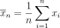 the empirical mean of the sample,
 its empirical variance,
its empirical variance,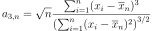 its empirical skewness.
We note 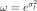. The estimator
 of
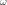 is the positive root of the relation:
of
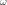 is the positive root of the relation:(1)¶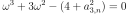
Then we estimate 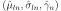 using:
(2)¶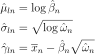
where 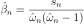.
Modified moments based estimator:
Using 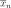 and 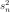 previously defined, the third equation is:
(3)¶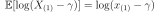
The quantity 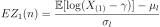 is the mean of the first order statistics of a standard normal sample of size
 . We have:
. We have:(4)¶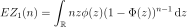
where 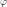 and
 are the PDF and CDF of the standard
normal distribution. The estimator 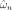 of is
obtained as the solution of:
are the PDF and CDF of the standard
normal distribution. The estimator 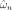 of is
obtained as the solution of:(5)¶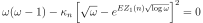
where 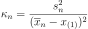. Then we have using the relations defined for the moments based estimator (2).
Local maximum likelihood estimator:
The following sums are defined:
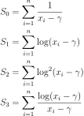
The Maximum Likelihood estimator of 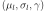 is defined by:
(6)¶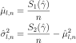
Thus, 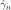 satisfies the relation:
(7)¶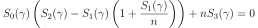
under the constraint 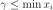.
Least squares method estimator:
The parameter
 is numerically optimized by non-linear least-squares:
is numerically optimized by non-linear least-squares: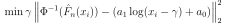
where 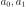 are computed from linear least-squares at each optimization evaluation.
When
is known and the  follow a Log-Normal distribution then
we use linear least-squares to solve the relation:
follow a Log-Normal distribution then
we use linear least-squares to solve the relation:(8)¶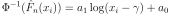
And the remaining parameters are estimated with:
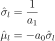
Examples
>>> import openturns as ot >>> ot.RandomGenerator.SetSeed(0) >>> sample = ot.LogNormal(1.5, 2.5, -1.5).getSample(1000) >>> estimated = ot.LogNormalFactory().build(sample)
Methods
build(*args)Build the distribution.
buildAsLogNormal(*args)Build the distribution as a LogNormal type.
buildEstimator(*args)Build the distribution and the parameter distribution.
buildMethodOfLeastSquares(sample)Build the distribution based on the least-squares estimator.
Build the distribution based on the local likelihood maximum estimator.
buildMethodOfModifiedMoments(sample)Build the distribution based on the modified moments estimator.
buildMethodOfMoments(sample)Build the distribution based on the method of moments estimator.
Accessor to the bootstrap size.
Accessor to the object's name.
getId()Accessor to the object's id.
getName()Accessor to the object's name.
Accessor to the object's shadowed id.
Accessor to the object's visibility state.
hasName()Test if the object is named.
Test if the object has a distinguishable name.
setBootstrapSize(bootstrapSize)Accessor to the bootstrap size.
setName(name)Accessor to the object's name.
setShadowedId(id)Accessor to the object's shadowed id.
setVisibility(visible)Accessor to the object's visibility state.
- __init__(*args)¶
- build(*args)¶
Build the distribution.
Available usages:
build()
build(sample)
build(sample, method)
build(param)
- Parameters
- sample2-d sequence of float, of dimension 1
The sample from which the distribution parameters are estimated.
- methodinteger
An integer corresponding to a specific estimator method:
0 : Local likelihood maximum estimator
1 : Modified moment estimator
2 : Method of moment estimator
3 : Least squares method.
- paramCollection of
PointWithDescription A vector of parameters of the distribution.
- Returns
- dist
Distribution The built distribution.
- dist
Notes
See the buildAsLogNormal method.
- buildAsLogNormal(*args)¶
Build the distribution as a LogNormal type.
Available usages:
buildAsLogNormal()
buildAsLogNormal(sample)
buildAsLogNormal(sample, method)
buildAsLogNormal(param)
- Parameters
- sample2-d sequence of float, of dimension 1
The sample from which the distribution parameters are estimated.
- methodinteger
An integer ranges from 0 to 2 corresponding to a specific estimator method: - 0 : Local likelihood maximum estimator (default) - 1 : Modified moment estimator - 2 : Method of moment estimator - 3 : Least squares method.
The default value is from the
ResourceMapkey LogNormalFactory-EstimationMethod.- paramCollection of
PointWithDescription A vector of parameters of the distribution.
- Returns
- dist
LogNormal The built distribution.
- dist
Notes
In the first usage, the default
LogNormaldistribution is built.In the second usage, the parameters are evaluated according the following strategy:
It first uses the local likelihood maximum based estimator.
It uses the modified moments based estimator if the resolution of (7) is not possible.
It uses the moments based estimator, which are always defined, if the resolution of (5) is not possible.
In the third usage, the parameters of the
LogNormalare estimated using the given method.In the fourth usage, a
LogNormaldistribution corresponding to the given parameters is built.
- buildEstimator(*args)¶
Build the distribution and the parameter distribution.
- Parameters
- sample2-d sequence of float
Sample from which the distribution parameters are estimated.
- parameters
DistributionParameters Optional, the parametrization.
- Returns
- resDist
DistributionFactoryResult The results.
- resDist
Notes
According to the way the native parameters of the distribution are estimated, the parameters distribution differs:
Moments method: the asymptotic parameters distribution is normal and estimated by Bootstrap on the initial data;
Maximum likelihood method with a regular model: the asymptotic parameters distribution is normal and its covariance matrix is the inverse Fisher information matrix;
Other methods: the asymptotic parameters distribution is estimated by Bootstrap on the initial data and kernel fitting (see
KernelSmoothing).
If another set of parameters is specified, the native parameters distribution is first estimated and the new distribution is determined from it:
if the native parameters distribution is normal and the transformation regular at the estimated parameters values: the asymptotic parameters distribution is normal and its covariance matrix determined from the inverse Fisher information matrix of the native parameters and the transformation;
in the other cases, the asymptotic parameters distribution is estimated by Bootstrap on the initial data and kernel fitting.
- buildMethodOfLeastSquares(sample)¶
Build the distribution based on the least-squares estimator.
- Parameters
- sample2-d sequence of float, of dimension 1
The sample from which the distribution parameters are estimated.
- gammafloat, optional
The
parameter estimate
- Returns
- dist
LogNormal The built distribution.
- dist
- buildMethodOfLocalLikelihoodMaximization(sample)¶
Build the distribution based on the local likelihood maximum estimator.
- Parameters
- sample2-d sequence of float, of dimension 1
The sample from which the distribution parameters are estimated.
- Returns
- dist
LogNormal The built distribution.
- dist
- buildMethodOfModifiedMoments(sample)¶
Build the distribution based on the modified moments estimator.
- Parameters
- sample2-d sequence of float, of dimension 1
The sample from which the distribution parameters are estimated.
- Returns
- dist
LogNormal The built distribution.
- dist
- buildMethodOfMoments(sample)¶
Build the distribution based on the method of moments estimator.
- Parameters
- sample2-d sequence of float, of dimension 1
The sample from which the distribution parameters are estimated.
- Returns
- dist
LogNormal The built distribution.
- dist
- getBootstrapSize()¶
Accessor to the bootstrap size.
- Returns
- sizeinteger
Size of the bootstrap.
- getClassName()¶
Accessor to the object’s name.
- Returns
- class_namestr
The object class name (object.__class__.__name__).
- getId()¶
Accessor to the object’s id.
- Returns
- idint
Internal unique identifier.
- getName()¶
Accessor to the object’s name.
- Returns
- namestr
The name of the object.
- getShadowedId()¶
Accessor to the object’s shadowed id.
- Returns
- idint
Internal unique identifier.
- getVisibility()¶
Accessor to the object’s visibility state.
- Returns
- visiblebool
Visibility flag.
- hasName()¶
Test if the object is named.
- Returns
- hasNamebool
True if the name is not empty.
- hasVisibleName()¶
Test if the object has a distinguishable name.
- Returns
- hasVisibleNamebool
True if the name is not empty and not the default one.
- setBootstrapSize(bootstrapSize)¶
Accessor to the bootstrap size.
- Parameters
- sizeinteger
Size of the bootstrap.
- setName(name)¶
Accessor to the object’s name.
- Parameters
- namestr
The name of the object.
- setShadowedId(id)¶
Accessor to the object’s shadowed id.
- Parameters
- idint
Internal unique identifier.
- setVisibility(visible)¶
Accessor to the object’s visibility state.
- Parameters
- visiblebool
Visibility flag.